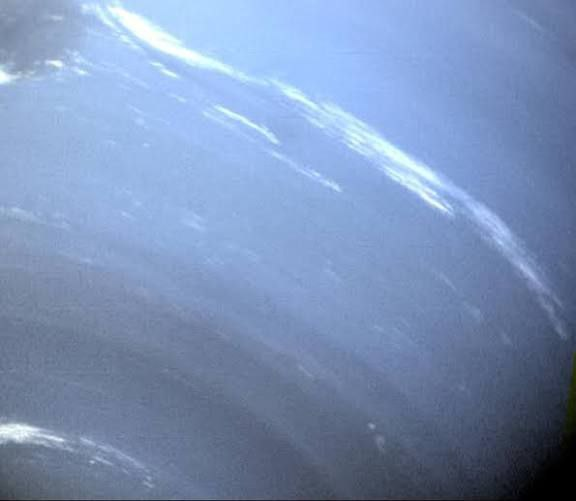
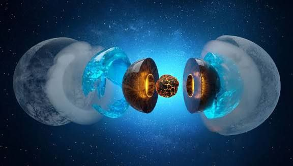

Uranus
Ice giant; tilted rotation axis.

အရွယ်အစား
50,724 km
တစ်နေ့ကြာချိန်
7h 12m
အပူချိန်
≈-197 °C
လများ
27 Moons
Uranus သည် Solar System ထဲတွင် Sun မှ သတ္တမမြောက်အကွာအဝေးရှိသော ဂြိုလ်ဖြစ်သည်။ Uranus သည် ice giant ဟုခေါ်သော ဂြိုလ်အမျိုးအစားဖြစ်ပြီး အဓိကအားဖြင့် ရေခဲနှင့် ဓာတ်ငွေ့များဖြင့် ဖွဲ့စည်းထားသည်။ Uranus သည် အပြာစိမ်းရောင်ပုံပေါ်နေခြင်းမှာ ၎င်း၏ လေထုတွင် methane ဓာတ်ငွေ့ ပါဝင်နေသောကြောင့် ဖြစ်သည်။ Methane သည် နေရောင်ခြည်၏ အနီရောင်အလင်းကို စုပ်ယူပြီး အပြာရောင်အလင်းကို ပြန်လှန်စေသောကြောင့် Uranus သည် အပြာစိမ်းရောင်ပုံပေါ်နေသည်။ Uranus ၏ ထူးခြားချက်တစ်ခုမှာ ၎င်းသည် ဘေးတစ်ဖက်သို့ ၉၀ ဒီဂရီနီးပါး လှဲထားသကဲ့သို့ လှည့်ပတ်နေခြင်းဖြစ်သည်။ ထို့ကြောင့် Uranus တွင် ရာသီများသည် အလွန်ရှည်လျားပြီး ထူးခြားသော ရာသီဥတုအခြေအနေများ ဖြစ်ပေါ်သည်။ Uranus တွင် ဂြိုလ်တုများ ၂၇ လုံးခန့်ရှိပြီး ထိုထဲတွင် အကြီးဆုံးများမှာ Titania၊ Oberon၊ Umbriel နှင့် Ariel တို့ဖြစ်သည်။

Surface Details
Internal Structureထူးခြားချက်များ
Ice giant, အပြာစိမ်းရောင် ဘေးတစ်ဖက်သို 90° လှည့်ထားသကဲ့သို လှည့်ပတ်ခြင်း ဂြိုလ်တု ၂၇ လုံးရှိ (Titania, Oberon, Umbriel, Ariel)